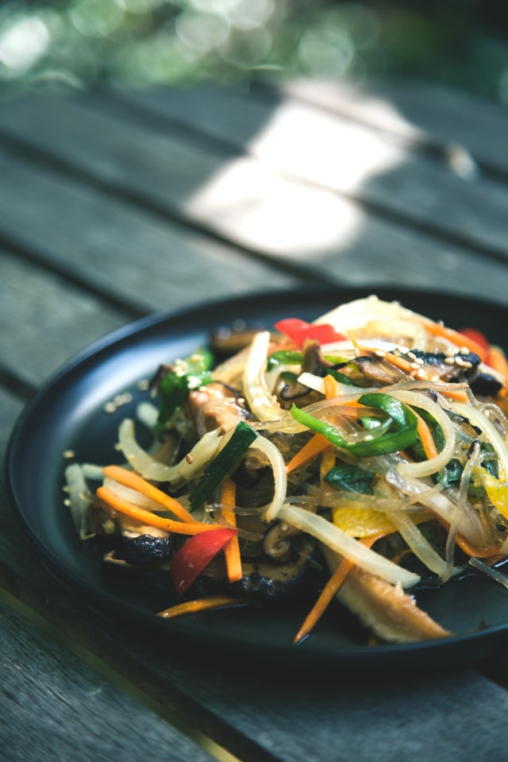

Stir Fry

Description
This delicious and easy stir friy recipe is perfect for those nigths that you want to use
up some of the vegetables in your fridge before they go bad! Substitute all of your favorite
vegetables, meat, and sauces to customize this stir fry.
Ingredients
Teriyaki Dressing
- Soy sauce
- Sesame oil
- Stevia powder
- Garlic powder
- Ground ginger
Stir Fry
- Vegetable oil
- Skinless, boneless chicken breasts
- Minced garlic
- Brocolli florets
- Chopped red pepper
- Chopped yellow pepper
- Chopped orange pepper
- Green onion
- Sesame seeds
- Long-grain white rice
Steps
Combine soy sauce, orange juice, sesame oil, stevia powder, garlic powder, and ginger for teriyaki dressing
in a small saucepan. Bring to a boil over medium-high heat, stirring constantly; continue cooking until the
mixture thickens slightly. Remove and set aside.
Heat a large skillet over medium-high heat. Add vegetable oil and heat until shimmering, 1 to 2 minutes.
Add chicken and garlic; stir-fry for 2 to 3 minutes. Add broccoli and continue to stir-fry, 4 to 6 minutes.
Add bamboo shoots and bell peppers; cook for an additional 4 to 6 minutes.
Carefully pour the teriyaki dressing into the skillet (watch for splattering); cook until chicken is no longer
pink in the center and juices run clear, and the vegetables are tender, about 5 minutes more.
Remove from heat and stir in green onion and sesame seeds, reserving some of each for garnish. Serve immediately
over cooked white and wild rice with the reserved green onions and sesame seeds.